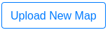
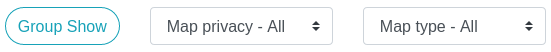
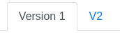

Generate Map Management
Contents
Generate Map Management¶
Upload 2D/3D Maps¶
Register an account on our portal site
Click  button on the left side of home page.
Upload your 2D or 3D map on the uploading map page.
3.1. If there is no building which you are looking for, create a new one. :)
After uploading, you will see your maps at home page.
Note
Show maps in different ways
Toggle or select different display styles. The Group Show will display all
version of a map in a row.

Private / Public Maps¶
Currently, we only support private and public, two modes.
privatemaps could only be viewed and edited by your-selves.publicmaps could be viewed by all users on our site. All users could add their own mark points/paths/blocks.
Note
More than 2 modes - More Permission Control
The Google Doc liked map sharing permission control is under developing.
After deploying the new version, you could share the specific maps to others
with view / edit permissions.
Tip
Toggle private / public
Click into the map details page at home page.
Click toggle button on the left side of the map details page to set map as
privateorpublic.
Map Version Control¶
We support different versions for the same map. There are two ways to upload new versions.
Go the map details page, and click upload button on the right side . You only need to upload new map costmap or point cloud. (recommended)
- Create the new map with same name and same building. Our system will make the new map as new version automatically.
After uploading several versions for a same map, you could see the version links  at top of map details page. Clicking each one to view details.